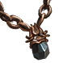

Vorici Chromatic Calculator
| Total Sockets | ||||
| Requirements | ||||
| Desired Colors |
| Craft Type | Average Cost (in chromatics) |
Success Chance | Average Attempts (mean) |
Cost per Try (in chromatics) |
Std. Deviation (of attempts) |
|---|
Note: Chromatic orbs cannot reroll the same color permutation twice, so the chromatic success chance is always higher than the drop rate.
For mono-requirement items, on-color: 0.9 * (R + 10) / (R + 20)
For mono-requirement items, off-color: 0.05 + 4.5 / (R + 20)
For dual-requirement items, on-color: 0.9 * R1 / (R1 + R2)
For dual-requirement items, off-color: 10% flat chance, regardless of requirements
The formulas and color chances given are not guaranteed to be right (but I tried!)
Questions, comments, or want to contribute data? Post on Reddit.
Changelog | Source Code | Item Data
Made by Siveran. Last updated Aug 4, 2017.
CC0 2017
{{ _.capitalize(type) }} Anointing
